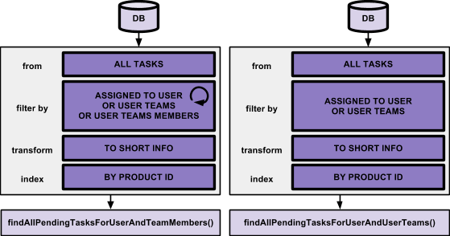

Context
You have just started a new project in a corporate and investment bank, and you have to improve quality and maintainability of an existing blotter application.
A blotter consists in a list of products displayed to users.
Product visibility depends of participant teams which are indicated on each product. A user who belongs to the team which is affected to a product as participant can show this product in its blotter. This rule is also suitable for subteams.
Three different types of blotter exist with specific rules:
- All products blotter which contains all products with tasks for user, user’s teams and user’s teams’ members.
- Team blotter which contains only product with task for user, user’s teams and user’s teams’ members.
- User blotter which contains only product with task for user, user’s teams.
Organization
Each user belongs to teams and have roles (sales, engineer or trader). Each team contains members which can be users or teams.
A task is assigned to a member (user or team) and a role.
Goal
Refactor existing application by reducing complexity of task and product repositories.
Use Guava to filter and transform tasks and products according to business rules.
Task helper rules
